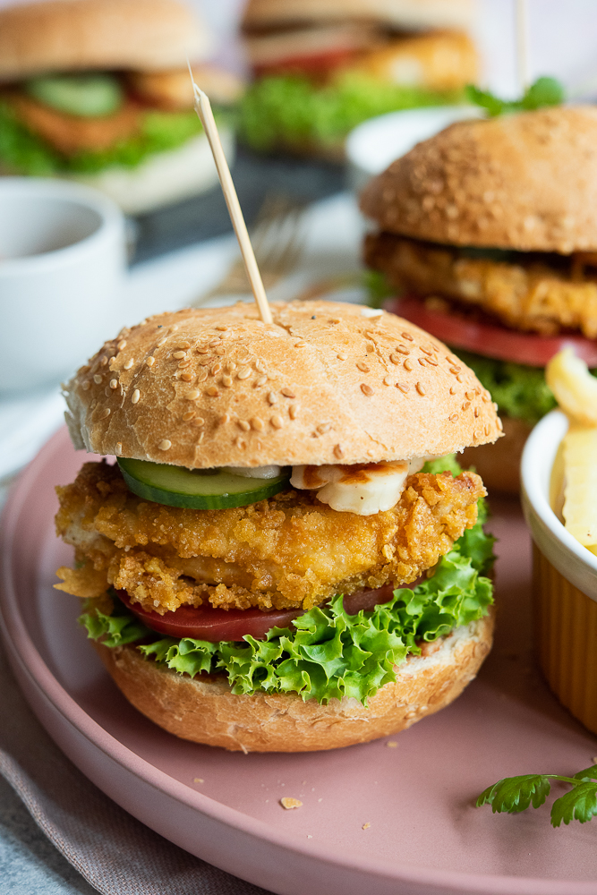

Chicken-burger

Description:
Make the easiest chicken burger at home from scratch! Tastes delicious with juicy and succlent chicken patties breaded and fried to perfection.
Ingredients:
- 2 tbsp olive oil
- 2 large onions
- 00-500g / 14oz-1 lb chicken breast (2 pieces)
- 4-8 slices Swiss or other melting cheese slices
- 4 soft rolls
Steps:
- Mix Garlic Mayo ingredients in a small bowl, set aside for 20+ minutes
- Mix Seasoning in a flat bowl / dish
- Heat 1 tbsp oil in a skillet over high heat
- Heat 1 tbsp oil into the same skillet, still on high heat
- Dredge chicken in Seasoning, shake off excess, then place in skillet. Repeat